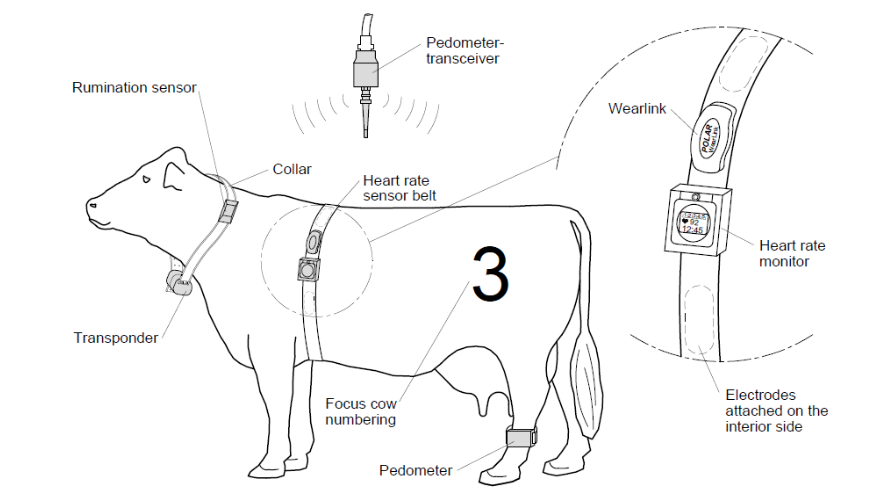
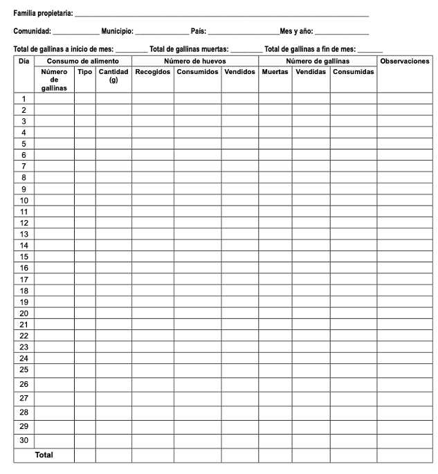
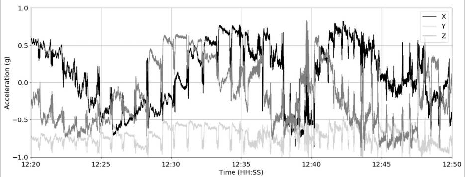
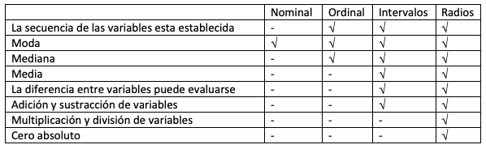

1.1- Que es la Ciencia de los datos
La ciencia de los datos abarca un amplio espectro de habilidades que se requieren para analizar los datos obtenidos de diferentes fuentes tanto dentro de la finca como por fuera. De acuerdo con Oracle, la ciencia de los datos es una combinación de varios campos como la estadística, el método científico y el análisis de datos que se usan para extraer valor de los datos, o en otras palabras obtener información útil.
El manejo y análisis de los datos requiere de ciertos conocimientos, experiencia y algunas habilidades de programación que se puede aprender, pero fundamentalmente se necesita curiosidad, interés y unas buenas bases de matemáticas y estadística que permitan dar respuesta adecuada a las preguntas planteadas. Esto se resume en un artículo de McKinsey&Company. Este artículo retoma las palabras de Hal Varian antiguo ecomista en jefe de Google quien manifiesta que para hacer ciencia de los datos se requiere: 1- identificar preguntas relevantes, 2- recolectar datos de múltiples fuentes, 3- organizar la información, 4- traducir los resultados en soluciones y 5- comunicar los hallazgos en una manera que afecte positivamente la decisión.
En nuestro sector pecuario, los datos se obtienen de diferentes fuentes. Desde los simples registros de producción diaria que se llevan en un cuaderno, hasta sofisticados sensores de producción que hoy en día se ubican en los ordeños, en las básculas y en los animales como los podometros y los sensores de ruminación (ver gráfico inferior). También podemos hablar de sensores de ambiente (temperatura, humedad), software de alimentación, examenes bromatológicosy estudios de suelos entre muchos otros. Por lo cual los requisitos mencionados son fundamentales y se requieren habilidades específicas para poder recolectar e integrar datos de múltiples fuentes.

Créditos: Animal Behavior in a Fully Automatically Controlled Dairy Farm, Gräph et al. 2015
Como profesionales del campo, seguramente no nos vamos a convertir en científicos de datos, Pues ya tenemos suficientes responsabilidades clínicas, administrativas o de producción. Pero si es necesario entender los datos que se generan tanto adentro como afuera de la granja, y que información podemos obtener a partir de ellos transformandolos en información valiosa que nos ayude a identificar riesgos y oportunidades.
Volver a contenidos
1.2- Qué son los datos crudos
Los datos que se generan a todo nivel tanto dentro de la empresa como por fuera de la operación y aun no han sido editados, los podemos denominar datos crudos o datos primarios. Estos datos se caracterizan porque no han sido manipulados ni tabulados. Según el Statista una vez que los diferentes datos han sido procesados es decir integrados, normalizados o agregados podríamos hablar de datos secundarios y estos datos se caracterizan porque no necesariamente contienen los datos originales sino que tienen algún tipo de valor agregado o información.
Desde el punto de vista práctico, los datos crudos se refieren a tablas de datos donde cada fila contiene una observación y cada columna representa una variable (Bock, 2018). Entonces, lo mas importante es tener en cuenta que la data cruda es esa data que no ha sido procesada. Un ejemplo claro es los datos de producción que se recogen a diario en un galpón de ponedoras (ver la tabla inferior). Este registro solo contiene la producción del día, el consumo de alimento y la variación en la población de aves, que sería la materia prima para comenzar a realizar los análisis, sin embargo, no hay ningún tipo de tabulación o procesamiento de los datos. De hecho en la mayoría de nuestras fincas estos datos aún se llevan a la mano y no son tabulados.
Registro de producción de huevos y carne (gallinas adultas)

Fuente: Manual de producción, manejo de aves de patio
Los registros como el de producción de ponedoras (tabla superior) son la base para la recolección de datos yrepresentan nuestra materia prima. Sin embargo, para un adecuado análisis hay que tabularlos en un medio digital. Siempre hay que tener claro cuales son las variables que queremos obtener y esto sin caer ni en excesos ni en defectos (muchos datos innecesarios o repetidos o por el contrario escasez de datos que no permitan hacer el análisis). Es clave diseñar registros efectivos que nos permita introducir los datos de la manera mas rápida y evitando comenter errores en la digitación que posteriormente conduzcan a errores en la interpretación de resultados.
Por debemos entender la estructura del registro . Esto hace referencia a la manera como los datos se recogen y pueden clasificarse como datos estructurados o desestructurados. Los primeros normalmente vienen en forma tabular es decir filas y columnas, por ejemplo el registro de postura presentado anteriormente. Usualmente, las columnas (eje vertical) hacen referencia a las variables y las filas (eje horizontal) hacen referencia a las observaciones o datos registrados para cada una de las variables. Los datos desestructurados son los que no vienen organizados de una manera predefinida. La información puede venir de manera textual, números, fechas u objetos binarios (Blobs). Hoy en día a nivel de las fincas este tipo de datos se hacen mas frecuentes pues las cámaras de video o térmicas al igual que los sensores como los podómetros o los sensores de ruminación generan este tipo de datos. La gráfica inferior muestra información de aceleración reticulo-ruminal colectada en vacas Jersey con bolos sensores como ejemplo de datos no estructurados.
información de medidas de aceleración enviada por un bolo sensor en una vaca Jersey

Fuente: Identification of the Rumination in Cattle Using Support Vector Machines with Motion-Sensitive Bolus Sensors, Hamilton et al. 2019
Finalmente, existe una tercera categoría que es la data semi-estructurada. La principal característica es que tiene algo de estructura, pero no toda la estructura requerida para ajustarse a los requerimientos de una base de datos. La data semi-estructurada posee algunos atributos para separar varias entidades dentro de la data. Algunos ejemplos son XML, JSON, Emails, NoSQL DBs, seguimiento de eventos, y páginas web (De Couto, 2020).
1.3- Clasificación de los datos según su naturaleza
De acuerdo con su naturaleza los datos pueden ser nominales, ordinales, de intervalos y de escala de radio. Es muy importante entender esta clasificación ya que de acuerdo con esta, sabremos que tipo de análisis es el mas indicado para los datos recogidos. Por ejemplo datos como raza o estado reproductivo, no podran analizarse de igual manera a los datos de produccion. En la tabla que se presenta a continuación se resume esta clasificación y se presentan varios ejemplos aplicados a nuestro sector pecuario.

La siguiente tabla que se presenta en la parte inferior está adapta del portal QuestionPro y presenta de manera resumida las forma de medición de las cuatro escalas (nominal, ordinal, intervalos y radios). Como se puede observar los datos de tipo radio, son los que permiten un mayor análisis y son tal vez los de mayor importancia para nosotros (conversión alimenticia, peso final, producción de huevos por galpón etc.). Esto no significa que sean los mas importantes, ya que existe información clave para el sistema productivo que se obtiene de otro tipo de datos, sin embargo, mucha de la información de producción pecuaria pertenece a esta categoría lo cual nos permite realizar un gran numero de mediciones como veremos posteriormente. Estas clasificaciones las trabajaremos en mas detalle cuando desarrollemos los ejemplos prácticos.
Resumen de clasificación de los datos y su forma de medición

Referencias
- Defición de Datos Crudos. Enciclopedia Statista. Consultado en Mayo 2021
- Entendiendo la data estructurada y desestructurada. De Couto Carmen, 2020 en Sisense.com. Consultado Mayo 2021
- Guerrero, H., Guerrero and Rauscher, 2019. Excel data analysis. Springer International Publishing.
- Niveles de Medición en questionpro.com. Consultado Mayo 2021
- Qué es la Ciencia de los Datos? Oracle. Consultado en Mayo 2021.
- Qué es la Ciencia de los Datos? Berkeley School of Information. Consultado en Mayo 2021.
- Qué son los Datos Crudos? Bock Tim, 2018 en displayr.com